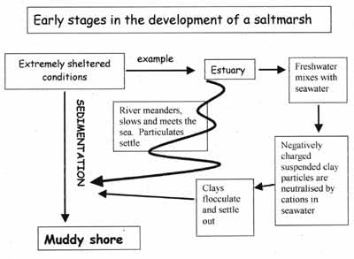

In order for a salt marsh to develop the first thing needed is a sea shore with very little wave action. Fine particulate material like muds, silts and clays cannot begin fall out of suspension (sedimentation) and build up (accretion) in anything other than calm conditions. You can only get salt marshes forming on shores where there is shelter from exposure (wave action). Such places are found on the sides of estuaries (where rivers meet the sea and meander producing shores that are very well protected from the open coast) or on coasts protected by shingle or sand bars or spits or in large bays with narrow entrances. You also need a source of mud, this can be from the sea or rivers or both.
Clay particles are very small . They are also negatively charged and mutually repellent, hence they stay in suspension in the river water. In the estuary the river water mixes with seawater and the charges on the clay particles may be neutralised. The clay particles are no longer repellent and may stick together (flocculate) and settle out (sedimentation). This will help the build up of a muddy shore in an estuary.
You can continue with the next stages by clicking the link or return to the introduction by clicking Back
Looking for a next step?
The FSC offers a range of publications, courses for schools and colleges and courses for adults, families and professionals that relate to the seashore environment. Why not find
out more about the FSC?

FEEDBACK
Do you have any questions?
Copyright © 2008 Field Studies Council

Creative Commons Attribution-Noncommercial-No Derivative Works 3.0 Licence .
Site Statistics by Opentracker